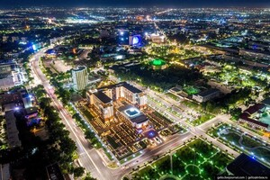

 Tashkent also historically known as Chach, is the capital and largest city of Uzbekistan, as well as the most populous city in Central Asia, with a population in 2021 of 2,694,400. It is in northeastern Uzbekistan, near the border with Kazakhstan.
Before Islamic influence started in the mid 8th century AD, Tashkent was influenced by the Sogdian and Turkic cultures. After Genghis Khan destroyed it in 1219, it was rebuilt and profited from the Silk Road. From the 18th to the 19th century, the city became an independent city-state, before being re-conquered by the Khanate of Kokand. In 1865, Tashkent fell to the Russian Empire; it became the capital of Russian Turkestan.
Tashkent is the capital of and the most cosmopolitan city in Uzbekistan. It was noted for its tree-lined streets, numerous fountains, and pleasant parks, at least until the tree-cutting campaigns initiated in 2009 by the local government. Since 1991, the city has changed economically, culturally, and architecturally. New development has superseded or replaced icons of the Soviet era. The largest statue ever erected for Lenin was replaced with a globe, featuring a geographic map of Uzbekistan. Buildings from the Soviet era have been replaced with new modern buildings. The "Downtown Tashkent" district includes the 22-story NBU Bank building, international hotels, the International Business Center, and the Plaza Building.
The Tashkent Business district is a special district, established for the development of small, medium and large businesses in Uzbekistan. In 2018, was started to build a Tashkent city (new Downtown) which would include a new business district with skyscrapers of local and foreign companies, world hotels such as Hilton Tashkent Hotel, apartments, biggest malls, shops and other entertainments. The construction of the International Business Center is planned to be completed by the end of 2021. Fitch assigns “BB-” rating to Tashkent city, “Stable” forecast.